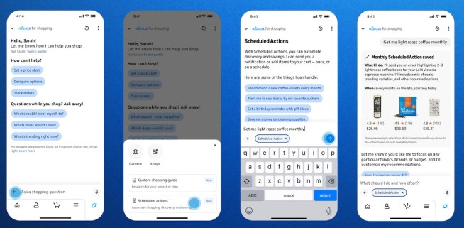
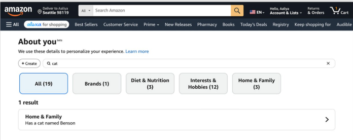
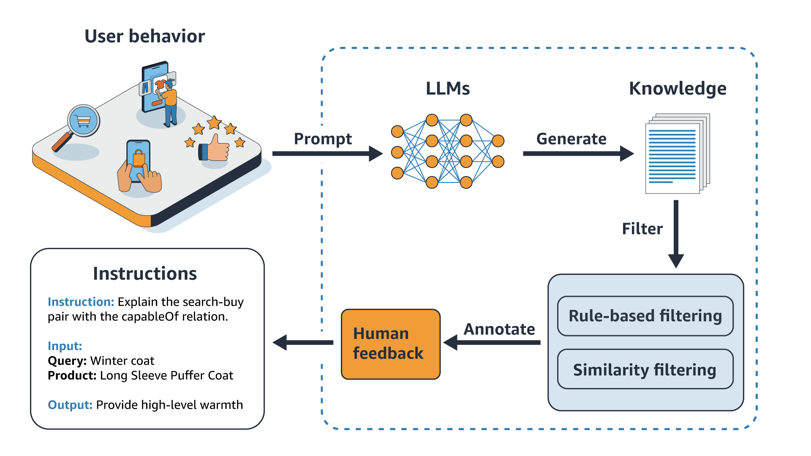
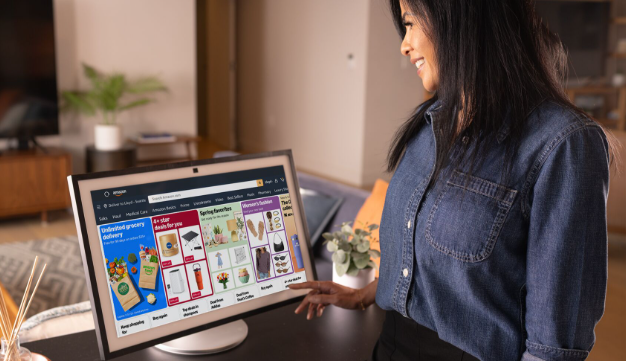
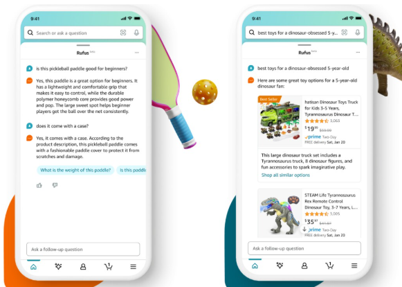

13 maja 2026 Amazon uruchomił w USA Alexa for Shopping - nowego asystenta zakupowego opartego na AI. Branżowe nagłówki przeczytały to jednym zdaniem: "Amazon kasuje Rufusa". To skrót myślowy, który może kosztować sprzedawcę kilka miesięcy spóźnienia. Amazon nie zamknął Rufusa. Przeniósł go o piętro niżej i dołożył nową warstwę na górze. Jeśli przez ostatni rok przebudowywałeś listingi pod Rufusa, ta praca nie przepada - właśnie stała się fundamentem.
Czym jest Alexa for Shopping i dlaczego "Rufus umarł" to skrót myślowy
Prasa technologiczna opisała premierę jak pogrzeb: "Amazon ditches Rufus", "Rufus is dead". Oficjalny komunikat Amazona brzmi inaczej - "Amazon brings together Rufus and Alexa+ to create Alexa for Shopping", czyli Amazon łączy Rufusa i Alexę+, żeby stworzyć Alexa for Shopping. To nie jest to samo zdanie.
W praktyce Amazon zestawił dwie rzeczy. Pierwsza to wiedza o produkcie - czytanie listingów, graf COSMO, odpowiadanie na pytania o produkty. Dokładnie to robił Rufus. Druga to personalizacja - pamięć o tym, kim jest klient, co kupił, o co pytał wczoraj, na jakim urządzeniu jest teraz. To wnosi Alexa+. Alexa for Shopping to powierzchnia, na której te dwie warstwy spotykają się dla kupującego.

Alexa for Shopping wchodzi prosto w pasek wyszukiwania Amazona.
Co faktycznie się zmieniło: klient nie widzi już osobnego przycisku "Rufus". Nazwa znika z interfejsu i z tej perspektywy nagłówki mają rację - marka "Rufus" odchodzi. Czego nie zmieniono: silnika. Warstwa, która czyta Twój listing, dopasowuje go do intencji i odpowiada na pytania kupujących, jest fundamentem, na którym Alexa for Shopping stoi. Rufus obsłużył w 2025 roku ponad 300 milionów klientów według danych Amazona - ta warstwa miała już skalę, zanim dostała rozpoznawalną nazwę.
Dlatego dla sprzedawcy zdanie "Rufus został zastąpiony" jest mylące. Sugeruje, że optymalizacja pod Rufusa się zdezaktualizowała. Jest dokładnie odwrotnie. Zmienił się szyld, nie maszyna pod spodem.
About You: profil klienta, którego nigdy nie napisałeś
Nowa warstwa, którą dokłada Alexa+, nazywa się About You. To zbiorczy profil klienta wewnątrz Amazona - historia zakupów, rozmowy z asystentem, recenzje, które klient sam napisał, listy zapisanych produktów, wyszukiwania. Klient może ten profil otworzyć, zobaczyć i edytować.

About You - profil, z którego agent czyta, kim jest klient.
Konsekwencja dla sprzedawcy jest konkretna. Do tej pory agent czytał Twój listing. Teraz czyta dwie rzeczy naraz: Twój listing i profil About You kupującego. Zapytanie, z którym dopasowywany jest Twój produkt, nie jest już tym, co klient wpisał w pasek. Jest tym, co agent wywnioskował.
Spójrz na przykłady, których Amazon użył przy premierze. "Podpowiedz materiały na projekt na targi nauki, o którym rozmawialiśmy." "Na zmywarce miga błąd E07." Żadne z tych zdań nie zawiera słowa kluczowego, które sprzedawca mógłby zaplanować. Pierwsze opiera się na wcześniejszej rozmowie, drugie na tym, że agent sam rozszyfruje model sprzętu i pasującą część. Ty projektujesz to, co jest na listingu. Nie projektujesz kontekstu, który agent wnosi do odczytu - i to jest realna zmiana, nie zmiana nazwy.
Cztery rzeczy, które agent czyta w Twoim listingu
Pomocna jest tu mapa czterech warstw, które agent ocenia w listingu. To ramka analityczna agencji ZonGuru, nie oficjalna taksonomia Amazona, ale dobrze porządkuje temat:
- Pokrycie semantyczne - jak kompletnie listing mapuje się na 15 typów relacji w grafie COSMO: dla kogo jest produkt, do czego służy, w jakim kontekście, z czym współgra, na jaką okazję.
- Pokrycie Q&A - jak dobrze listing odpowiada na konwersacyjne pytania, które klient zadaje na głos. To dokładnie ta warstwa, którą oceniał Rufus, i przechodzi do Alexa for Shopping bez zmian.
- Dane strukturalne w backendzie - GTIN, atrybuty kategorii, browse nodes, sygnały zgodności. To bramka, którą trzeba przejść, zanim agent w ogóle przeczyta copy z frontu listingu.
- Dopasowanie do odbiorcy - jak bardzo listing czyta się jako trafny dla grupy, którą About You zbudował po stronie klienta. Ta warstwa nie istniała jako sygnał organiczny przed 13 maja.

Graf wiedzy COSMO dopasowuje intencję kupującego do atrybutów produktu.
Jedna liczba warta zapamiętania. Na ponad 5000 audytów listingów w USA mediana wyniku to 65 na 100 - przy medianie pokrycia semantycznego 70 i pokrycia Q&A 54. To asymetria, którą widać u większości sprzedawców: nieźle z opisem relacji produktu, słabo z odpowiadaniem na pytania. Pokrycie Q&A to dziś najtańsza poprawka o najwyższym zwrocie.
Czwarta warstwa, dopasowanie do odbiorcy, jest tu jedyną naprawdę nową. Wcześniej profil klienta budowało się po stronie reklamy - w AMC i DSP to sprzedawca definiował grupę docelową i licytował o wyświetlenia. About You odwraca ten układ: grupę buduje sam klient, latami swoich zachowań, a agent ją czyta i podsuwa pasujące produkty organicznie, zanim wejdzie jakakolwiek płatna reklama.
Buy for Me, Shop Direct i dlaczego silniejszy robi się jeszcze silniejszy
Druga połowa ogłoszenia zmienia sam lejek. Buy for Me pozwala agentowi przeprowadzić cały zakup za klienta, również na stronach innych sklepów. Shop Direct pozwala odkrywać produkty ze sklepów spoza Amazona. Agent zostaje Amazona, ale zakup już niekoniecznie.

Alexa for Shopping na ekranie Echo Show.
Dla marki obecnej tylko na Amazonie to nieszczelność - klient przychodzi przez agenta Amazona i może wyjść przez kasę konkurencyjnego sklepu, jeśli tam dopasowanie jest lepsze. Dla marki sprzedającej też we własnym sklepie i na innych marketplace'ach ten sam mechanizm działa jako nowy kanał pozyskania, bo agent może podsunąć jej listing spoza Amazona.
Do tego dochodzi mechanika ponawiania zakupów. Scheduled Actions i zakup warunkowy - na przykład "dodaj ten krem do koszyka, jeśli cena spadnie do 40 zł i nie kupowałem go od dwóch miesięcy" - sprawiają, że agent w pierwszej kolejności podsuwa "to, co zwykle kupujesz". Marka, którą agent nazywa "Twoją", zyskuje przewagę, jakiej pozycja w wynikach wyszukiwania nigdy nie dawała. Rośnie też koszt braku towaru: stockout wypada z pamięci "co zwykle kupuję" do czasu, aż klient sam wróci - a większość nie wraca.
A co z Europą i Amazon.pl
Najważniejsze dla polskiego sprzedawcy: Alexa for Shopping startuje wyłącznie w USA i nie ma żadnej ogłoszonej daty wejścia do Europy - ani dla Wielkiej Brytanii, ani dla Niemiec, Francji, Włoch czy Hiszpanii, ani dla Amazon.pl. Rozsądne założenie to USA-only przez najbliższe 6 do 12 miesięcy.
Sam Rufus jako warstwa działa w krajach EU5 (DE, FR, IT, ES, UK) od końca 2025 roku. Na Amazon.pl wciąż go nie ma. Z tego wynikają dwa scenariusze. Jeśli sprzedajesz na Amazon.de albo Amazon.co.uk - a to reguła wśród polskich marek własnych - warstwa Rufusa już dziś kształtuje Twoją sprzedaż za granicą, a Alexa for Shopping to kolejna fala, która do tych rynków przyjdzie. Jeśli działasz tylko na Amazon.pl, masz czas na przygotowanie, ale konkurent, który przebuduje listingi teraz, zbuduje sobie 6-9 miesięcy przewagi na dzień startu.
Co zrobić z listingiem już teraz
Dobra wiadomość jest taka, że substrat się nie zmienił. Praca pod Rufusa to praca pod Alexa for Shopping - ten sam listing, ta sama logika. Zmieniła się nazwa na froncie i doszła warstwa personalizacji, na którą i tak nie masz bezpośredniego wpływu.

Czat Rufusa - warstwa, która przeszła pod Alexa for Shopping.
Konkretnie, w tej kolejności:
- Wybierz jeden ASIN - ten z najwyższym przychodem. Nie audytuj całego katalogu w tym miesiącu. Tam, gdzie jest ruch, błąd kosztuje najwięcej, a poprawka procentuje najszybciej.
- Najpierw zamknij lukę Q&A. Mediana 54 na 100 to najsłabsze ogniwo u większości sprzedawców. Bullety, które uprzedzają następne pytanie kupującego, realne pytania i odpowiedzi w sekcji Q&A, tekst w A+ rozpisujący scenariusze użycia.
- Potem przejrzyj niedoceniane powierzchnie. A+ Content agent czyta nie jako marketing, tylko jako dodatkowe pokrycie Q&A i kontekstu użycia. Zdjęcia czyta wizualnie - rozpoznaje, co pokazują, nie tylko czy się ładują. Recenzje wchodzą do oceny listingu, więc liczy się ich świeżość i odpowiedzi na te negatywne. Brand Registry odblokowuje część tych powierzchni.
- Nie wyrzucaj warstwy keywordowej. Stary A9 wciąż napędza ranking organiczny, a listing bez podstaw keywordowych nie dotrze do powierzchni, na której agent w ogóle go przeczyta. Warstwa AI siedzi na keywordach, nie zamiast nich.
Jeśli chcesz, żeby ktoś przeszedł przez konkretny listing pod tym kątem, od tego jest Analiza Opinii (VOC) + Analiza Marketingowa - głos klienta z setek opinii, claimy konkurencji i luki rynkowe w jednym dashboardzie, czyli surowiec do listingu, który faktycznie odpowiada na pytania kupujących. Więcej o tym, co dokładnie czyta ten silnik, jest w tekście jak zoptymalizować listing pod Amazon Rufus, a o tym, jak AI przestawia reklamę - w analizie jak AI zmienia Amazon Ads w 2026.
- Amazon nie skasował Rufusa - 13 maja 2026 połączył go z Alexą+ w Alexa for Shopping. Znika nazwa, nie silnik czytający listing.
- Nowa warstwa to About You - profil klienta, przez który agent dopasowuje produkt do wywnioskowanej intencji, nie do wpisanego słowa kluczowego.
- Praca nad listingiem pod Rufusa przechodzi 1:1 na Alexa for Shopping. Najsłabsze ogniwo u większości sprzedawców to pokrycie Q&A (mediana 54/100) - od tego zacznij.
- Alexa for Shopping jest na razie tylko w USA, bez daty dla Europy. Warstwa Rufusa działa w EU5 od końca 2025, na Amazon.pl jej nie ma.
- Buy for Me i Shop Direct pozwalają agentowi kupować poza Amazonem - dla marki tylko-Amazon to nieszczelność, dla marki wielokanałowej nowy kanał pozyskania.
Najczęstsze pytania
Czy Rufus zniknął z Amazona?
Z perspektywy klienta tak - nie ma już osobnego przycisku "Rufus". Ale warstwa, która czytała listingi i odpowiadała na pytania o produkty, działa dalej jako fundament Alexa for Shopping. Dla sprzedawcy oznacza to, że optymalizacja pod Rufusa nie straciła ważności.
Czy muszę zmieniać listing, który optymalizowałem pod Rufusa?
Nie przebudowywać, tylko rozbudować. Substrat jest ten sam. Najwięcej zyskasz, zamykając lukę w pokryciu Q&A i porządkując A+ Content, zdjęcia oraz recenzje. Warstwy keywordowej pod stary A9 nie ruszaj.
Kiedy Alexa for Shopping wejdzie do Europy i na Amazon.pl?
Amazon nie podał żadnej daty. Start jest wyłącznie w USA. Rozsądnie jest założyć USA-only przez 6-12 miesięcy i traktować europejskie wdrożenie jako niepotwierdzoną przyszłość, a nie termin do planowania.
Co to jest About You?
To zbiorczy profil klienta wewnątrz Amazona - historia zakupów, rozmowy z asystentem, napisane recenzje, listy, wyszukiwania. Alexa for Shopping czyta go równolegle z Twoim listingiem, żeby dopasować produkt do konkretnej osoby.
Czy Buy for Me zabierze mi sprzedaż?
Może, jeśli sprzedajesz tylko na Amazonie - agent może dokończyć zakup w innym sklepie z lepszym dopasowaniem. Jeśli masz spójną obecność też poza Amazonem, ten sam mechanizm działa na Twoją korzyść jako nowy kanał pozyskania.

13 lat na Amazonie, 22 lata w e-commerce, 3 marki własne. Konsultant i edukator - pomagam sprzedawcom budować rentowne biznesy na Amazon FBA. Poznaj mnie bliżej.
Chcesz wiedzieć, czy Twój listing jest gotowy na Alexa for Shopping?
Przeprowadzę Cię przez pokrycie Q&A, A+ Content i sygnały, które czyta agent - tak, żeby praca pod Rufusa zaczęła procentować na nowej warstwie. Napisz do mnie.
Napisz do mnie